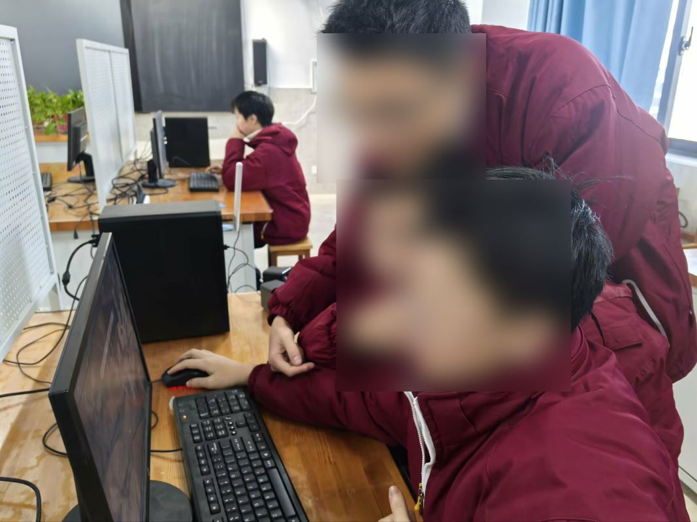
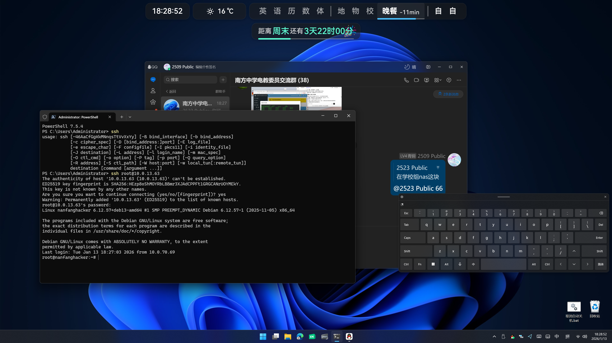
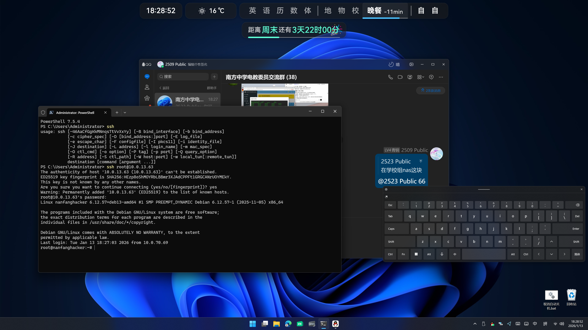
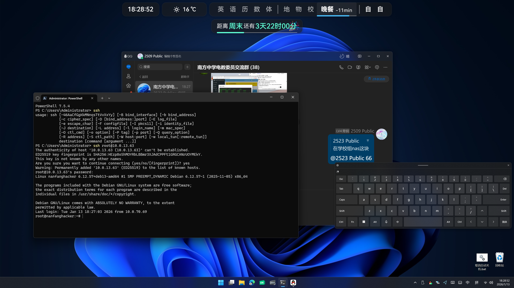

账号申请 / 联系我们
如需申请 NAS 账号或扩容空间，请通过以下方式联系维护人员。我们将在校内审核后为您开通服务。
Email
xxt8582753@126.com
QQ群
1021156150
若不方便在线发送申请，您可以直接联系 2509/2519/2520/2523/2524 班电教委员开通。
发送申请时请备注注册用户名、需提前配置的服务、欲开通的云空间大小（128GB 以内所有人可注册，如有大容量需求请备注原因）
项目详细介绍
项目背景
在校内教学资料、课件与学习文件日益增长的背景下，我们尝试利用现有硬件资源，自主组建一套面向老师与学生的校园 NAS 云存储系统。
技术亮点
- 基于 J1900 服务器平台部署飞牛 OS 国产 Linux 系统 + NAS 服务
- 使用 Web 管理界面进行用户、权限与空间配额管理
- 支持局域网高速访问与基础文件预览
- 通过公网映射，您可以在南方局域网覆盖之外场合正常使用 NAS 系统
服务保障
- 目前服务主机位于创新楼 507，有多名专业学生网络安全工程师轮班值守，确保系统稳定运行。
- 您的数据安全储存于校内实体 NAS 系统中，无需顾虑隐私被窃。
风采展示


 


这是一次真实的工程实践：从硬件选型、系统部署、网络配置，到软件开发与用户支持，全部由学生完成。
返回首页